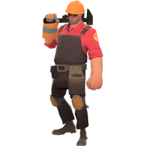
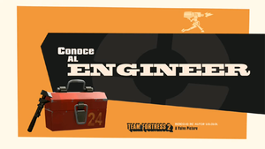

ingeniero
- icono:
- tipo: defensa
- salud: 125/
 185
185 - 145/ 225 (con el forajido)
- velocidad: 100%/ 75% (cargando una construccion)
meet the engineer
El Engineer es un tejano amigable, de habla suave, con una afición por todo lo mecánico. Este trata de construir y mantener construcciones que benefician a sus aliados en vez de dedicarse al combate directo. Entre las creaciones del Engineer se incluyen el Arma Centinela, una torreta automatizada que dispara a cualquier enemigo al alcance, el Dispensador, un dispositivo que recupera la salud y munición de los aliados cercanos y los Teleportadores que transportan a los aliados rápidamente. Pero sus ingeniosos dispositivos siempre están amenazados por los explosivos y los Spies enemigos; un buen Engineer debe cuidar de sus dispositivos y mantenerlos reparados todo el tiempo. Cuando el Engineer tiene que ensuciarse las manos, su trío de genéricas, pero útiles, armas combinadas con la asistencia de sus útiles dispositivos lo hacen más que capaz de cuidarse por si mismo. En caso necesario, el Engineer puede transportar una de sus construcciones a otro sitio que vea más favorable. Sus maquinarias son esenciales en cualquier equipo al ser muy favorables e importantes por el poder defensivo y ofensivo que traen por la generación de salud, munición y metal. El Engineer está doblado por Grant Goodeve (Jose Antequera en la versión Española).